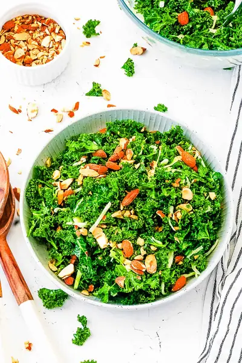

Chick-Fil-A Kale Salad (Copycat Recipe!)

Ingredients
- 1 bunch curly kale
- 3½ oz shredded green cabbage
- ½ cup roasted almonds (roughly chopped)
- 4 tsp apple cider vinegar
- 2 tsp lemon juice
- 3 tbsp maple syrup
- 2 tsp Dijon mustard
- ½ cup extra virgin olive oil
- 1 tsp garlic powder
- 1 tsp onion powder
- ½ tsp salt
- ¼ tsp pepper
Steps
- Prepare the dressing by adding all ingredients into a glass jar, screw the lid on tightly and shake vigorously to combine. Alternatively, you can whisk all ingredients in a bowl.
- Set dressing aside and prepare the salad by washing and removing the kale leaves from the stems.
- Roughly chop the kale and place in a mixing bowl.
- Next, add the shredded cabbage.
- Drizzle ½ of the salad dressing over top.
- Using clean hands, massage to soften the kale.
- Cover and refrigerate for 30 minutes - 1 hour.
- When ready to serve add the roasted almonds, reserving some to sprinkle on top, and toss to combine. Add more dressing if desired.
- Serve immediately.
Recipe by Anjali Shah · The Picky Eater, from The Picky Eater. Saved here for personal use; the original has the full notes, tips and photos. Open original